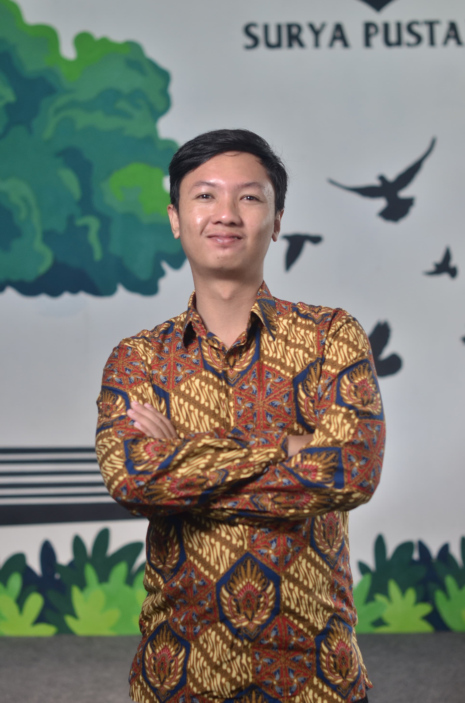

Papan Pak Aldo 👋
SMA MUHAMMADIYAH WONOSOBO
Guru Informatika & KKA · Web Developer · Kreator Visual
buka buku catatan ↓
TENTANG SAYA
Sehari-hari saya berdiri di depan kelas, menjelaskan logika pemrograman kepada siswa. Di waktu yang lain, saya duduk di depan code editor merapikan baris kode, atau di depan timeline video menyusun potongan klip untuk konten sekolah.
Bagi saya, mengajar dan membangun sesuatu adalah dua sisi mata uang yang sama: keduanya soal menyusun sesuatu yang rumit menjadi lebih mudah dipahami — entah itu untuk siswa di kelas, pengguna sebuah aplikasi, atau penonton di sosial media.
DI DALAM KELAS
Mengenalkan siswa pada dasar-dasar berpikir komputasional: logika, algoritma, dan pemrograman dasar, sampai literasi digital yang mereka pakai sehari-hari.
Mata pelajaran baru yang saya ampu, mengenalkan siswa pada dunia coding dan kecerdasan artifisial sejak dini — bekal yang relevan untuk masa depan mereka.
DI LUAR JAM MENGAJAR
// website-sekolah
Contoh proyek: laman profil sekolah dengan informasi kegiatan dan berita terkini.
// aplikasi-nilai
Contoh proyek: alat bantu guru untuk mencatat dan merekap nilai siswa.
// portofolio
Halaman yang sedang kamu lihat sekarang — dibangun dengan Tailwind CSS.
DI BALIK LAYAR
Mengedit foto dan video untuk konten sosial media, dokumentasi kegiatan sekolah, hingga materi pembelajaran.
SEBUAH CATATAN
Ada proyek, kelas, atau ide bareng? Kirim pesan saja.